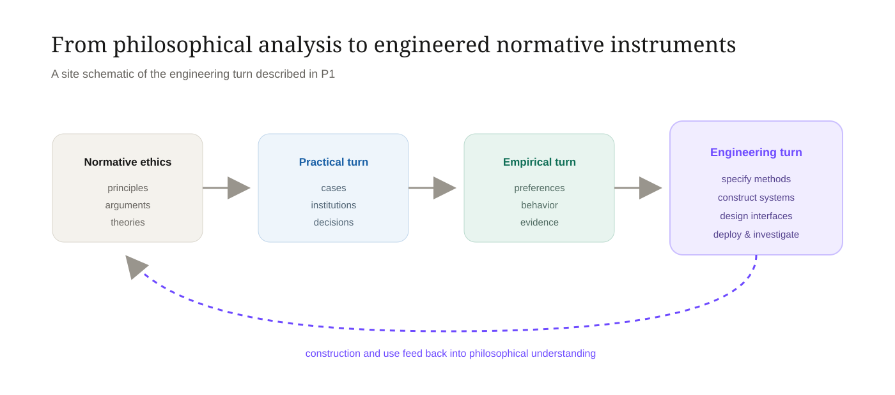

Doing Ethics with AI
Doing Ethics with AIEngineering instruments for practical ethics.
Doing Ethics with AI (DEWA) is a research program in practical ethics engineering, product-led philosophy, normative computation, and computer-aided ethics: making methods of ethical reasoning explicit enough to specify, build, inspect, test, and use.
How should AI be governed?
Studies the ethical implications, risks, institutions, policies, and design choices surrounding artificial intelligence.
How should machines act?
Studies systems that themselves make or implement ethically relevant decisions.
How can computational systems help people do ethics?
Builds inspectable normative instruments that make methods of reasoning executable, revisable, and empirically investigable.
A cumulative spine with parallel scientific contributions
The core papers follow the same normative object through distinct questions. Technical infrastructure, shared resources, and domain realizations mature alongside that sequence as independent contributions.
Doing Ethics with AI
Defines the paradigm, practical ethics engineering, product-led philosophy, normative computation, computer-aided ethics, and SACRE as the worked specification.
SpecificationBuilding Normative Computation
Turns SACRE into a usable, persistent, inspectable research instrument and studies what construction makes visible.
ConstructionComputational Validation
Tests reliability, robustness, representation and model effects, aggregation sensitivity, ranking stability, and process behavior.
Technical validationHuman Comparative Validation
Places human and computational judgments on matched normative objects and studies agreement, disagreement, and representation effects.
Human comparisonProgrammatic Deployments
Studies computer-aided ethics prospectively in institutions and real decision processes once the underlying instruments are characterized.
Use & deploymentAlethic-ISM
A domain-neutral instruction-state-machine architecture for persistent, auditable, replayable computational workflows.
Bioethics Bench
A source-grounded, versioned research infrastructure for computational and human evaluation in bioethics.
Computational Bioethics
The most developed domain realization of DEWA, focused on engineered methods for normative reasoning in bioethics.
From philosophical method to inspectable artifact.
DEWA treats specifications, executable procedures, interfaces, datasets, and deployed systems as part of the methodological surface of practical ethics.

A normative method is progressively represented through explicit inputs, relations, operations, intermediate judgments, and outputs until its procedure can be executed and inspected.
Product-led philosophy treats specification, construction, interface design, deployment, and investigation as a cycle in which artifacts can expose hidden assumptions and generate new philosophical questions.
Each paper owns a different scientific question
The portfolio is designed to avoid making one manuscript carry theory, construction, validation, infrastructure, and deployment at once.
Doing Ethics with AI
Introduces the general paradigm and develops SACRE as a worked normative specification.
Building Normative Computation
Develops ReflectiveEquilibrium.AI and the infrastructure needed to execute, inspect, revise, compare, and preserve normative analyses.
Computational Validation of Normative Computation
Characterizes the behavior of the instrument under repeated runs and controlled changes in models, representations, prompts, and aggregation choices.
Human Empirical & Comparative Validation
Studies human-human and human-model correspondence on matched normative objects and localizes where judgments converge or diverge.
SACRE: collective reflective equilibrium as an inspectable procedure
SACRE is the principal worked specification in the program. It preserves the iterative character of reflective equilibrium while making the represented candidates, pairwise judgments, aggregation rule, ranking, and revision lineage explicit.
Structurally Analyzed Collective Reflective Equilibrium
A case begins with a Scenario and Policy candidates grounded in public preferences, expert judgments, and ethical frameworks. Cross-source relations are evaluated with quantified conceptual-comparability judgments, aggregated under a declared rule, and retained as a complete coherence profile before any ranking is produced.
The top-ranked policy is provisional. Directed revision creates a new candidate and a fresh equilibration cycle rather than silently overwriting the previous state.
The program builds objects that can be inspected, rerun, compared, and studied
These are not presented as interchangeable products. Each supports a different part of the scientific program and is evaluated under a different claim ceiling.
ReflectiveEquilibrium.AI
The purpose-built SACRE application: represent cases, execute the method, inspect pairwise judgments, revise candidates through RE-Iteration, compare runs and iterations, and preserve analyses as research records.
Open the application →Bioethics Bench
A source-grounded corpus of reusable bioethics cases and policy candidates, with concise/detailed representations, provenance, sourcing, review state, and versioning designed for computational and human evaluation.
Explore Bioethics Bench →Alethic-ISM
A domain-neutral instruction-state-machine architecture in which computation is represented as persistent state transformations with provenance, replay, branching, multi-model execution, and distributed workflow support.
View Alethic-ISM on GitHub →QCS / QCCS
Quantified Conceptual Scoring methods for representing conceptual intensity and pairwise conceptual comparability. In SACRE, QCCS supplies the semantic judgments used to populate the cross-source coherence structure.
Open interactive demo →Construction is not validation
The program separates proof that a system can run from evidence about how reliably it behaves, how its judgments compare with people, and whether it helps in real-world use.
Computational characterization
Repeated execution, test–retest stability, model/provider effects, representation and prompt perturbations, aggregation sensitivity, ranking robustness, QCS/QCCS behavior, RE-Iteration fidelity, failures, latency, cost, and reproducibility.
Human empirical comparison
Human-human reliability, expert/lay variation where justified, human-model correspondence, disagreement localization, representation effects, and downstream policy/ranking behavior on matched normative objects.
Prospective deployment
Institutional feasibility, adoption, deliberation, documentation, disagreement identification, decision time, revision, reliance calibration, governance, error recovery, user experience, and practical outcomes.
Computational Bioethics
Bioethics is the most developed current domain realization because it already joins philosophical method, empirical evidence, professional judgment, institutional procedure, and consequential real-world decisions.
Computational bioethics studies the construction and use of engineered systems that make bioethical methods precise, executable, investigable, and applicable. Within DEWA, practical ethics engineering provides the field-building program, product-led philosophy the method of specification and construction, and computer-aided ethics the practical objective.
SACRE and ReflectiveEquilibrium.AI provide a developed example; Bioethics Bench supplies reusable source-grounded research objects; P3 and P4 provide the validation layers. The same broader engineering paradigm can be tested in other structured normative domains without assuming that bioethics exhausts the approach.
Research program
The work spans philosophy, bioethics, software systems, research infrastructure, and empirical validation.